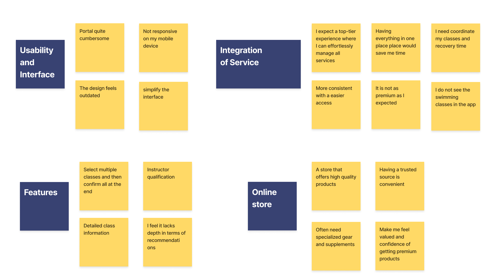

YEAR 2024
OVERVIEW
GymPro is a modern gym, developed to serve high-end clients, including services such as gym, spa, swimming pool, minibar and restaurants, personal trainer, extreme sports such as climbing, fights, among other exclusive services.
GymPro is a modern gym, developed to serve high-end clients, including services such as gym, spa, swimming pool, minibar and restaurants, personal trainer, extreme sports such as climbing, fights, among other exclusive services.
UX/UI Designer
User research, interviews, survey, competitive analysis, ideation, prototyping, testing, evaluation
Figma, Miro
Despite the fact that it is a gym with high end technology, it became obvious that the member control was not up to the expected stantard. Customers were complaining about it and about its lack of usability.
Discover, Define, Develop and Delivery
I started the discovery phase of my process with the Lean UX canvas. This tool helped me proritize user needs over feature development, leading to a more user-centric solutions.

I conducted a mix of qualitative and quantitative questions in order to understand the perceptions, preferences and behaviors of users. It will help me make informed decisions to improve my product service.
I interviewed individuals who are high-income professionals, athletes or sports enthusiasts, luxury seekers that went to gympro or their competitor in the last 6 months.
Below are some insights and highligths
The information I gathered during the interview is critial for validating or refuting the assumptions and helped guiding the development of the product
"Essential. For the premium price I’m paying, I expect a top-tier experience where I can effortlessly access and manage all services without any inconvenience."
"Extremely valuable. Personalized plans based on my performance data would help optimize my training and improve my results."
"Quite interested. I often need specialized gear and supplements, and having a trusted source within the GymPro ecosystem would be convenient."
"It’s functional but lacks the polish and ease of use I’ve experienced with other high-end fitness services."
Utilizing the affinity maapping technique, I organize quotes and discovered themes across each interview. Helping to create the personas later on.
Persona is a tool that represents a group of target users and is created based on research data. Creating 2 personas helps to understand of what the users are looking for.
The primary persona is Jarvah the high-income client. He goes to the gym almost every day, however he finds hard to make better use of all services offered because the app is not user friendly.
The secondary persona is Rachel, is a sport enthusiast, who find it hard to coordanate class, recovery in the SPA and also wants to find her suppliments and gear sports in one realiable place.
HMW is a design thinking activity used to translate problems into opportunites for design.
The plan is to generate as many as questions to validate and find out insights.
Using Customer Journey Map I recreated a user’s behavior when navigating through GymPro app. I found lots of opportunities.
Persona: Jarvah
Scenario: Jarvah, a 38-year-old successful corporate executive with a high annual income. Jarvah values efficiency, quality, and exclusivity in all his activities. He has a busy schedule and prioritizes health and fitness, making him a regular at GymPro. He enjoys using high-tech solutions that save time and enhance his lifestyle.

GymPro's current member portal is not meeting the expectations of its luxury-seeking, high-income and sport enthusiasts clientele. The portal's poor usability, lack of centralized booking, and insufficient class information are significant pain points for members. These issues are causing frustration, reducing the frequency of portal usage, and negatively impacting overall member satisfaction and engagement with GymPro's services.
Using the Moscow Method to categorize my ideas based on their impact on the user and the amount of effort it takes to bring the idea to life.
Card sorting is a technique used to generate the Information Architecture or the navigation flow of an app/ website with help of users.
Based on the information gathered during the research and persona phase, I was able to decide the main categories of my app. Hence, I performed a closed card sorting to understand which feature fits best under which category.
Conduction sketching sessions to map out the user flow and come up with a storyboard to capture the MVP.
Identifying the following key features:
Including the core features necessary to address the primary pain points and provide immediate value to members. The goal is to deliver a functional and user-friendly portal that enhances the user satisfaction, while allowing for future interactions based on user feedback.
Wireframes help establishing a skeleton view of the app screens.
The first version of lo-fi wireframes allowed me to run early tests and discover the priority revisions that need to be implemented before I start building the high fidelity prototype. The version below includes the revisions made to the information architecture and microcopy such as:
The first version of lo-fi wireframes allowed me to run early tests and discover the priority revisions that need to be implemented before I start building the high fidelity prototype.
Based on the feedback from initial usability test, I created hi-fi wireframes and a prototype.
Implemented a remember-me toggle button, it was noticed during the test that majoriety of users wanted the app to be ready to use and dont waste time rememeber or put their password on. Another functionality added was log-in with google, very much mentioned during the test.


On the Store page was added a cart button on the title component, in this way the user will be able to check how many items it is already in the cart.
Implement CTA add to calendar functionality. In this way the user wil have more the one option to check in their up coming class.

User engagement on the app has improved with the member portal, increased utilization of gym services, and improved overall member satisfaction.